OBSERVE
Entenda o tema de forma visual.
Entenda fundamentos, gramática, vocabulário e situações do dia a dia com explicações ilustradas, exemplos e exercícios práticos.
Páginas visuais criadas para ajudar você a entender, praticar e revisar inglês sem depender de explicações longas e complicadas.
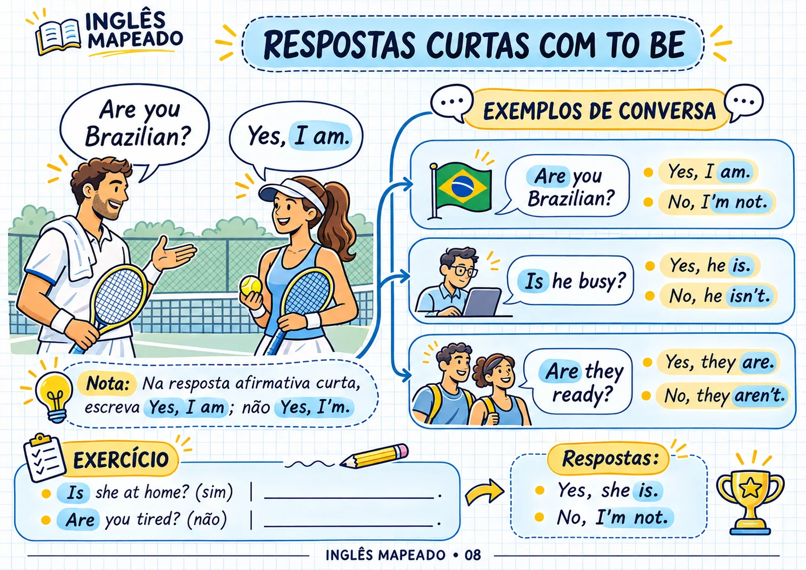
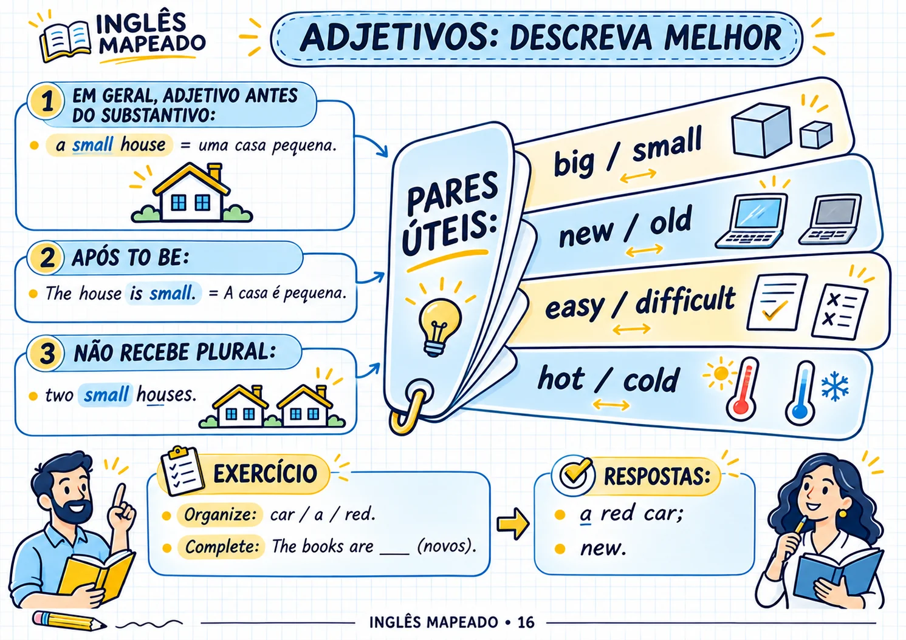
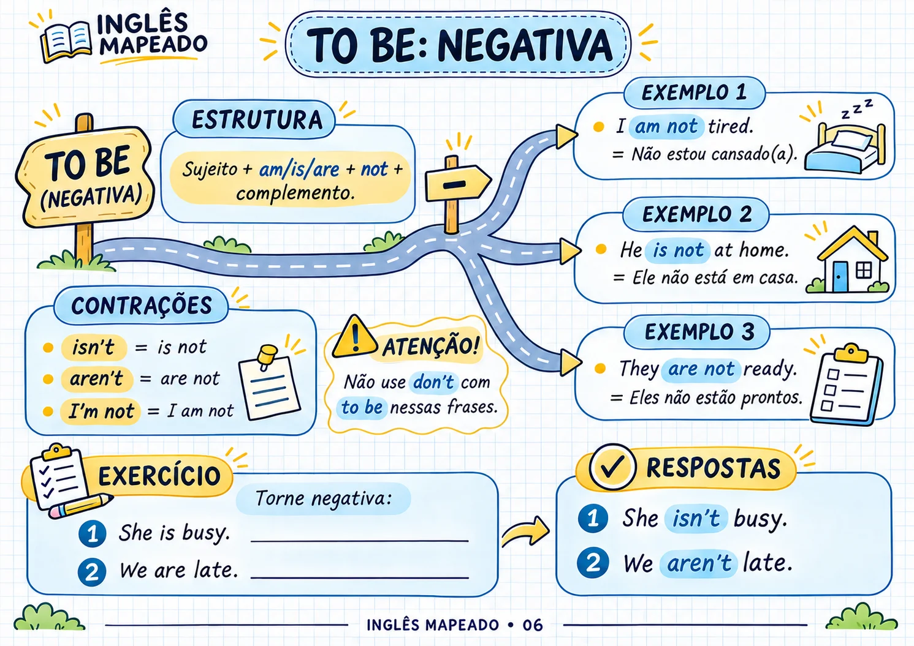
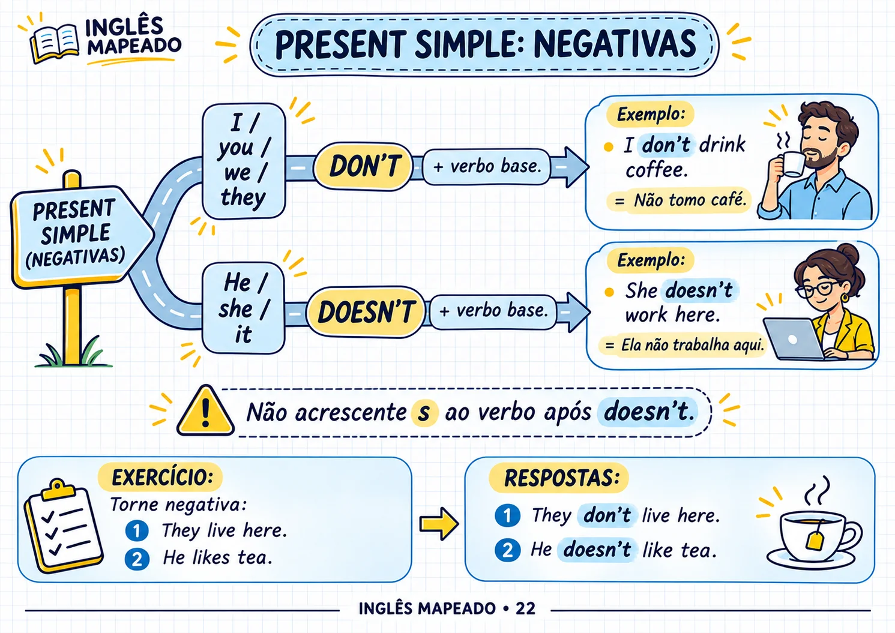
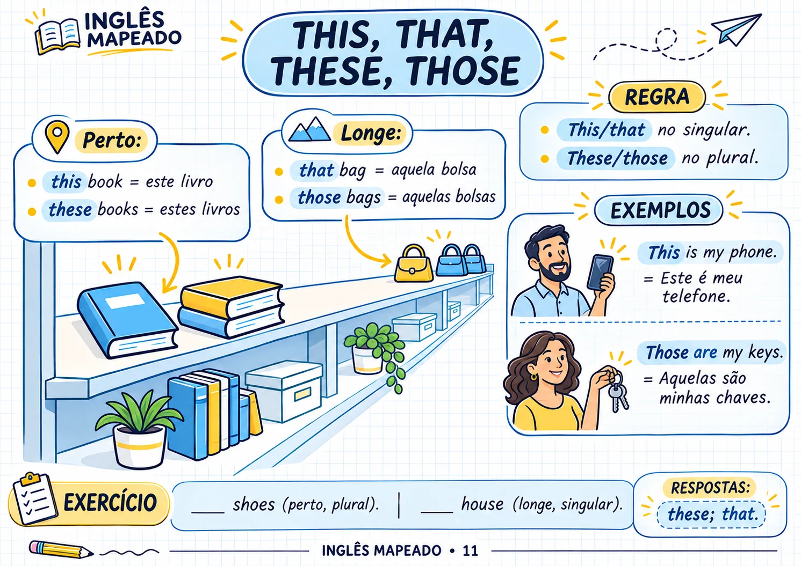
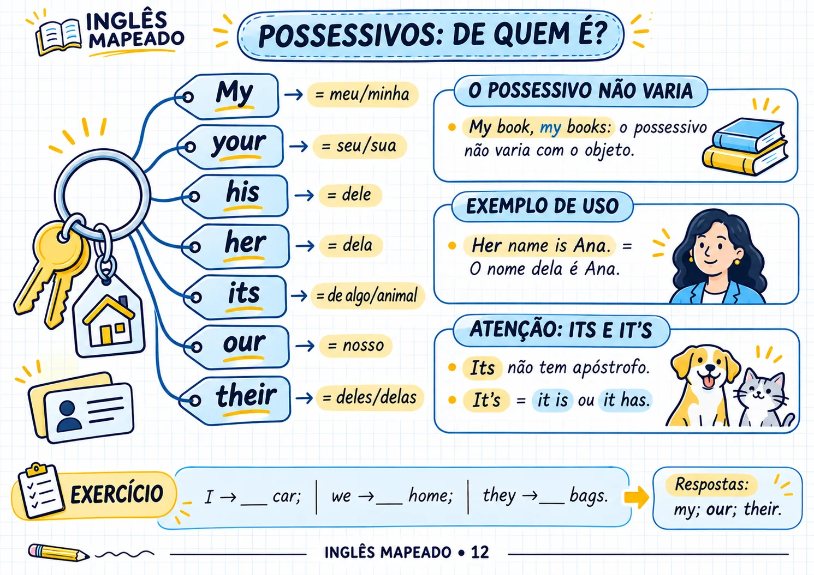
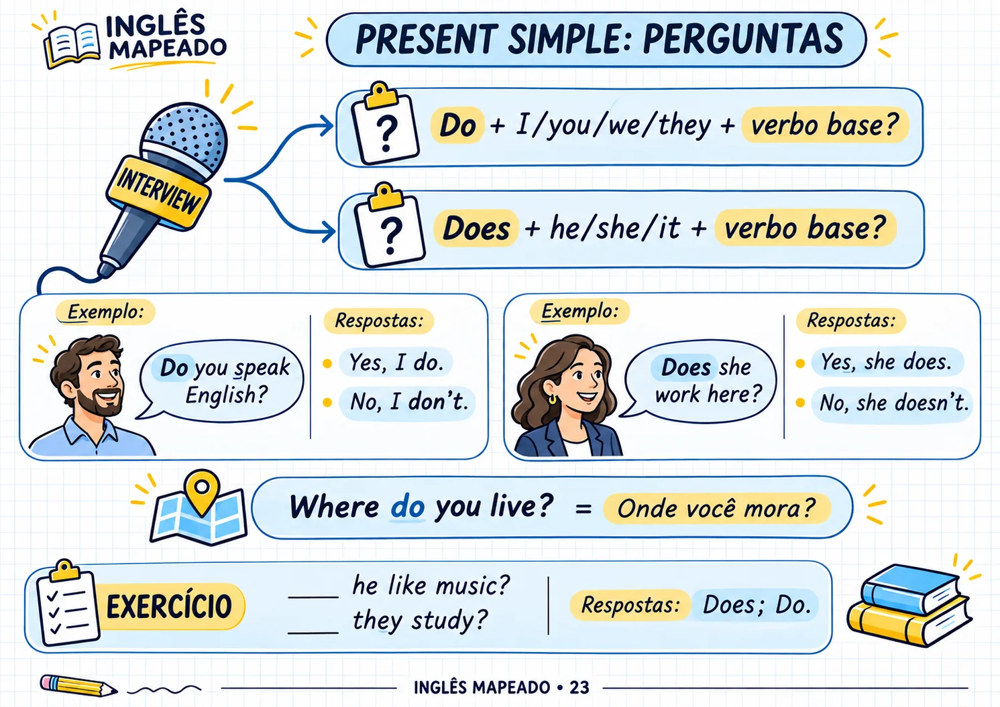
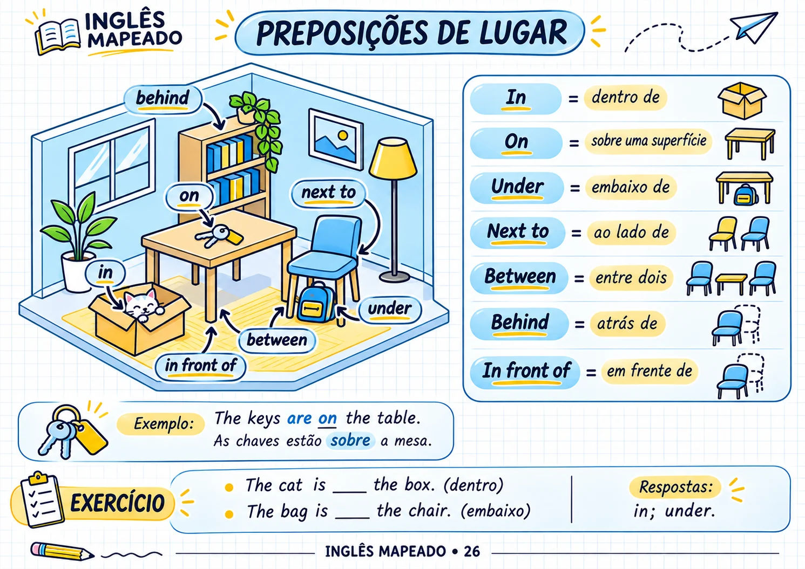
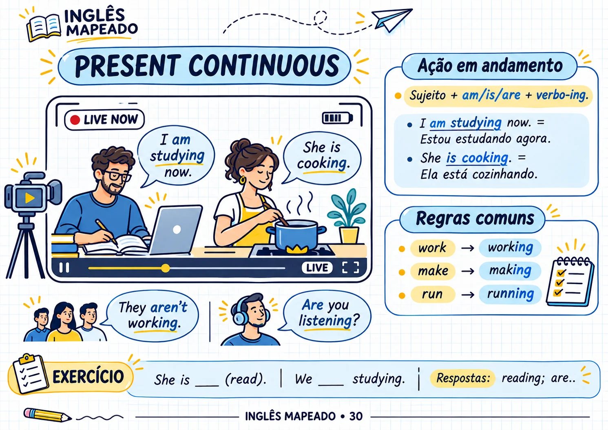
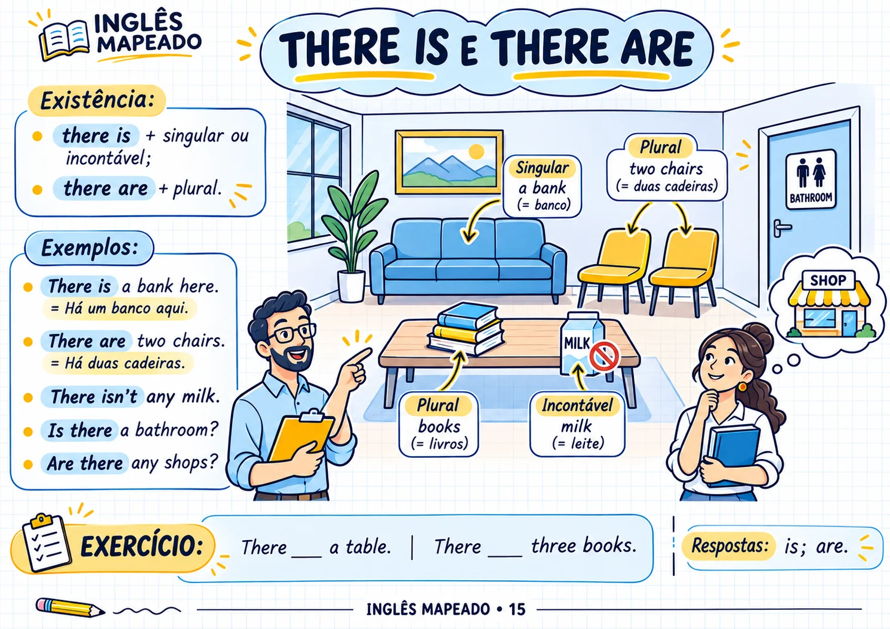
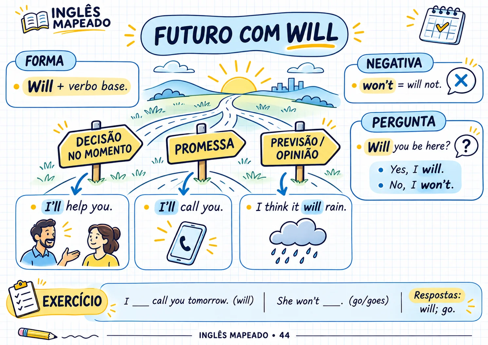
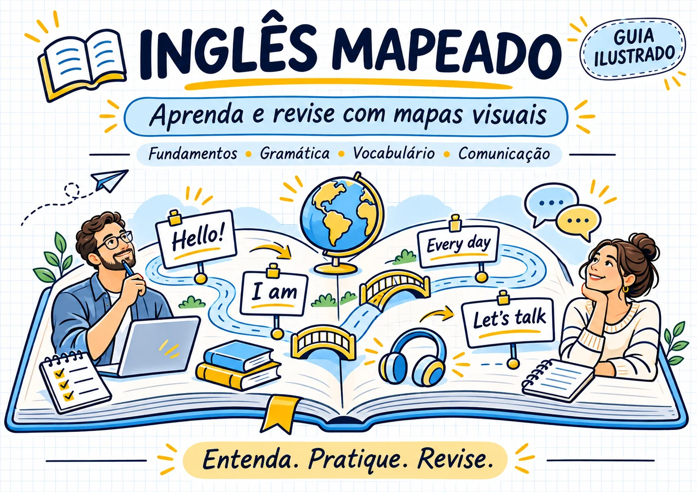
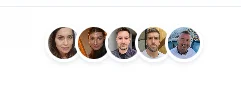
Cada tema combina explicações visuais, exemplos em inglês, tradução em espanhol e exercícios para praticar o que aprendeu.
Entenda o tema de forma visual.
Veja exemplos e traduções.
Faça exercícios rápidos.
Crie frases com o que aprendeu.
Volte ao conteúdo para reforçar.
[INSERIR AQUI SOMENTE DEPOIMENTOS REAIS]
Não inventar nomes, fotos, comentários ou resultados.
O material reúne diferentes áreas essenciais do inglês para ajudar você a construir uma base mais clara.
Pronomes · To Be · Artigos · Plurais · Possessivos · Números · Datas · Horas
Presente simples · Presente contínuo · Passado · Futuro · Comparativos · Superlativos · Present Perfect
Família · Casa · Roupas · Comida · Trabalho · Cidade · Transporte · Viagens · Saúde
Perguntas · Respostas · Frases do cotidiano · Instruções · Situações reais
Exercícios ao longo do material para revisar o que foi aprendido.
Um guia visual para quem deseja estudar inglês de uma forma mais clara, organizada e prática.
Ideal para quem precisa construir uma base e entender estruturas essenciais sem começar por explicações complicadas.
Consulte uma página, revise um tema e pratique sem precisar passar horas estudando.
Perfeito para quem prefere esquemas, ilustrações, exemplos e exercícios em vez de páginas cheias de teoria.
Dos pronomes e do verbo To Be ao vocabulário usado em viagens, trabalho, saúde e situações do cotidiano.
Inglês com apoio em espanhol e exemplos de uso.
Exercícios práticos, vocabulário do cotidiano e gramática aplicada.
Conteúdo visual para consultar e revisar.
Esses materiais são opcionais e complementam o Inglês Mapeado com conversação, erros comuns, prática diária e escrita.

Pratique conversas em cafeterias, lojas, restaurantes, hotéis, aeroportos e no trabalho. Inclui tradução em espanhol, frases de apoio e atividades para adaptar os diálogos à sua própria rotina.
OPCIONAL
Entenda palavras que geram confusão, traduções literais e erros frequentes de quem passa do espanhol para o inglês. Inclui exemplos visuais, exercícios e respostas para praticar.
OPCIONAL
Siga um plano de atividades curtas para saber o que estudar e como praticar a cada dia. Complete frases, escreva sobre sua rotina, pratique em voz alta e acompanhe seu avanço durante 21 dias.
OPCIONAL
Tenha exemplos para WhatsApp, e-mail e situações profissionais. Apresentar-se, pedir informações, combinar horários, confirmar compromissos, agradecer e pedir ajuda.
OPCIONALReceba o material principal Inglês Mapeado em formato digital.

De US$ 69,45 por apenas
Pagamento único · Acesso vitalício
Acesse o Inglês Mapeado, confira o conteúdo e veja se essa forma visual de estudar inglês funciona para você. Se decidir que o material não atende às suas expectativas dentro do período de garantia, poderá solicitar o reembolso.
Todo o processo é digital para que você possa começar depois da confirmação da compra.
Depois da aprovação do pagamento, o acesso ao material é liberado.
Você receberá as orientações necessárias para acessar o Inglês Mapeado.
Abra o material em um dispositivo compatível e comece pelas primeiras páginas do guia.
Encontre respostas para as principais dúvidas sobre o Inglês Mapeado.
Não. O material começa pelos fundamentos e avança por diferentes estruturas, vocabulários e situações de uso.
Sim. As explicações e o apoio são voltados para pessoas que falam espanhol e estão aprendendo inglês.
Não. Inglês Mapeado é um material digital visual, com explicações, exemplos e exercícios.
Sim, desde que utilize um dispositivo compatível com o formato do material.
Sim. Ao longo do guia há exercícios para praticar diferentes temas.
Fundamentos, gramática, vocabulário, comunicação e situações cotidianas em inglês.
Não. Os quatro materiais complementares são opcionais e podem ser adicionados separadamente.
Não. O valor indicado é um pagamento único.
Sim. A compra possui garantia de 7 dias. Se o material não atender às suas expectativas dentro desse período, poderá solicitar o reembolso.
O preço promocional de lançamento será reajustado em breve. Garanta seu acesso com segurança.
Aprenda inglês de forma simples, visual e direta ao ponto.
60 páginas visuais · Acesso digital
✓ Inglês Mapeado — guia visual com 60 páginas
✓ Opcional 01: Habla desde el primer día
✓ Opcional 02: No caigas en estas trampas
✓ Opcional 03: Reto de 21 días
✓ Opcional 04: Mensajes listos en inglés
✓ Garantia de 7 dias